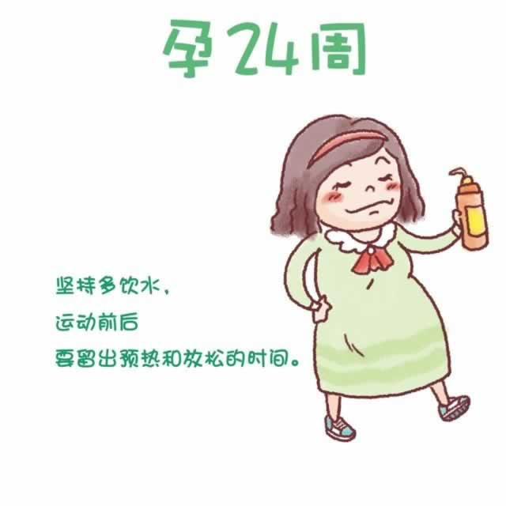

现在，子宫底部达到肚脐以上三横指处，你越发大肚便便了。腹部越来越沉重，腰腿痛也似乎成了常态。有时会感觉仿佛回到了孕早期：容易疲劳、头晕、尿频等不适症状卷土重来。即便如此，在保证安全的前提下，你还是要坚持适度的锻炼。锻炼会有助于增强体质，缓解不适。记得多喝水，运动前后留出热身和放松的时间。如果运动中出现疼痛、眩晕或呼吸急促，请立即停下来休息。
因为体内激素的变化，你的头发在这个阶段变得既浓密又有光泽，而一些部位的体毛也显得更粗更黑了，甚至下巴、唇部、脸颊、乳房等部位也萌发了毛发。不必因此而烦恼，在宝宝出生之后几周内就会恢复正常。